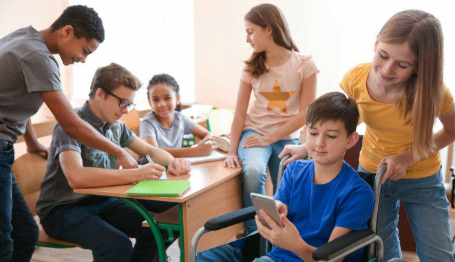
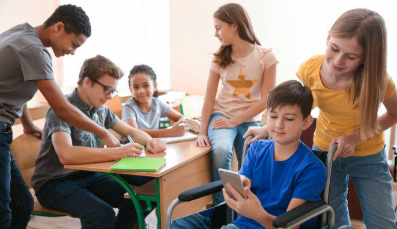

VALORES
Respeto:

Tolerancia:

Responsabilidad:

VALORES |
||
Respeto: |
Es mas por como me eh forjado como eh adquirido este valor, por la educación de casa desde pequeño el respeto ha sido fundamental para mi persona, por como trato a los demas o como me ven. Tambien es muy bueno para dar mejor imagen tuya, por la forma de tratar a cualquier persona en cualquier lugar. |
|
Tolerancia: |
Esto en primero no lo tenia en si, pero si se consigue en trabajos o juntas te das cuentas lo distinto que pueden ser algunas personas y debes tolerarlas porque asi son, todo tiene un limite claro esta pero siempre no esta demas ayudar y comprender la situación de cada quien. |  |
Responsabilidad: |
Es te valor es de casa, por la educación mas que todo a ser responsable en muchas cosas de la vida, como trabajo estudio etc. |
|
Humildad: |
Es algo caracteristico por no estar aparentando o presumir lo que tienes o no tengas, siempre ser humilde da mejor imagen que creyendote la gran cosa y caeras mucho mejor a las personas. | |
Paciencia: |
La he conseguido por como son las personas cuando trabajan conmigo o ayudandome, entendiendo que varios no pueden seguir el mismo ritmo de trabajo que tienes, te acostumbras con el tiempo y eso te caracterisa de muy buena manera. | |
Honestidad: |
Este valor si es de educación familiar, desde chico por cosas que pasan o yo mismo hice ahi aprendi mejor afrontar las situaciones pero no dar mentiras para agrandar el problema. | |